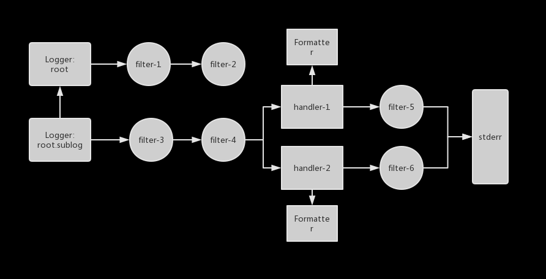
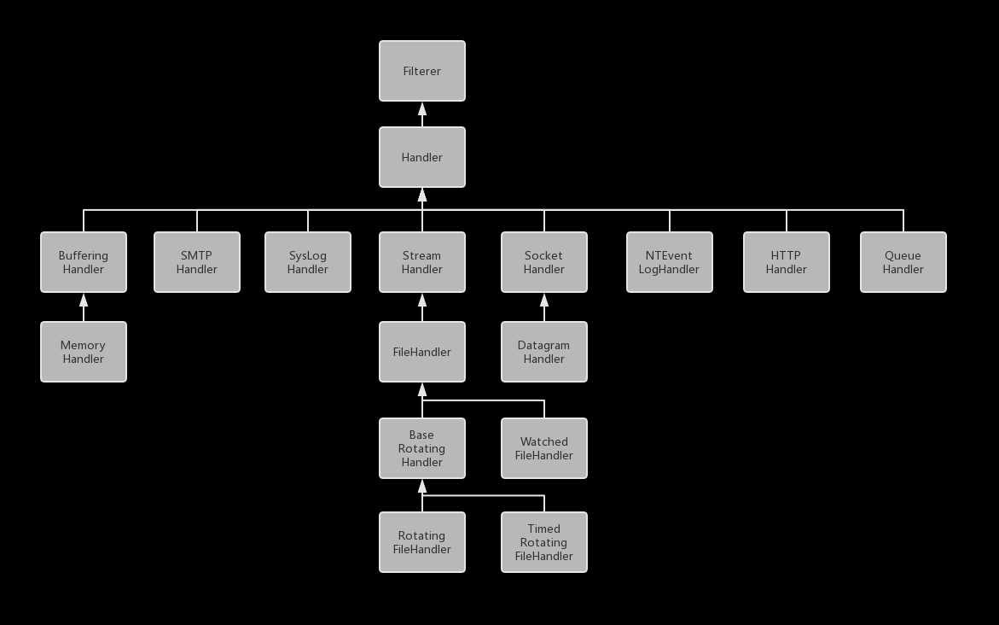

一、概述
1.Log系统框架

- 日志系统角色
- Logger, 用户通过Logger对象写日志。
- Logger可以配置链式的Filter。全部都通过后交给handler
- 可以配置多个Handler。会将通过filter的日志交给所有的handler进行落盘
- Logger有父子关系，当前Logger处理完日志后，会把日志叫个父Logger进行处理，直至祖先。父子关系通过Logger名字来确定。
- Logger具有日志级别，达到了日志级别的日志才交给Handler
- Handler, 负责处理日志信息，输出到指定的位置。
- Handler可以配置链式Filter，每个Filter
- Handler具有日志级别，达到了日志级别的才会落盘
- Handler具有Formatter，负责对日志进行格式化
- Handler默认采用StreamHandler，该处理器是把日志输出到stderr上，其他的处理器会输出到其他的设备上。
- Formatter, 负责格式化LogRecord对象。
- Filter, 过滤器将不满足条件的日志信息过滤掉，不输出至日志。
- LogRecord, 这个对象通常不由用户直接调用, 每条日志都会生成LogRecord对象, 该对象里面除了日志信息外还有额外的辅助信息，例如时间。
- Logger, 用户通过Logger对象写日志。
- 注意事项:
- python的logger采用单例模式，并且通过命名来区分。
- stderr是默认的Handler输出位置。
- logging模块提供直接的日志输出方法，这个采用的是默认logger, name是
root, 并且采用basicConfig方法进行初始化。
2.Log系统等级
Python的Log等级在logging模块中有定义:1
2
3
4
5
6
7
8
9
10
11
12
13
14
15
16
17
18
19
20
21
22
23
24
25
26
27
28CRITICAL = 50
FATAL = CRITICAL
ERROR = 40
WARNING = 30
WARN = WARNING
INFO = 20
DEBUG = 10
NOTSET = 0
_levelToName = {
CRITICAL: 'CRITICAL',
ERROR: 'ERROR',
WARNING: 'WARNING',
INFO: 'INFO',
DEBUG: 'DEBUG',
NOTSET: 'NOTSET',
}
_nameToLevel = {
'CRITICAL': CRITICAL,
'FATAL': FATAL,
'ERROR': ERROR,
'WARN': WARNING,
'WARNING': WARNING,
'INFO': INFO,
'DEBUG': DEBUG,
'NOTSET': NOTSET,
}
3.使用Demo
1 | # 最简化的日志，采用名为"root"的Logger |
二、Logger接口
继承关系链:
可以看出Logger继承了Filterer，该类主要是提供了添加filter、删除filte以及进行过滤的方法，Handler需要这些方法，因为Handler支持对内容进行过滤器筛选。1
2
3
4
5
6
7
8
9
10
11
12
13
14
15
16
17
18
19
20
21
22
23
24
25
26class Filterer(object):
"""主要是给logger和handler提供公共的方法，这些方法用于filter功能
"""
def __init__(self):
self.filters = []
def addFilter(self, filter):
if not (filter in self.filters):
self.filters.append(filter)
def removeFilter(self, filter):
if filter in self.filters:
self.filters.remove(filter)
# 迭代式进行过滤器判断
def filter(self, record):
rv = True
for f in self.filters:
if hasattr(f, 'filter'):
result = f.filter(record)
else:
result = f(record) # assume callable - will raise if not
if not result:
rv = False
break
return rv
三、Handler接口
loggin模块提供的StreamHandler和FileHandler是最简单的处理器类，并且他们是线程安全的，它们都会在写日志的时候加独占锁。继承关系链:

每个类的职责:
- Filterer, 提供过滤器相关控制方法(增删过滤器, 判断record是否需要过滤)
- Handler, 提供基本的handle方法, 主要是获取和释放锁, IO异常处理, 提供record的格式化方案等。
- StreamHandler, 提供了最基本的将record输出到Stream的方法。
- FileHandler, 提供了将record输出到File的方法。本质上就是StreamHandler, 因为文件的控制形式和流类似。
- RotatingFileHandler, 提供日志文件根据文件大小翻滚的功能
- TimedRotatingFileHandler, 提供日志文件根据时间定期翻滚的功能
- WatchedFileHandler, 监听文件是否被修改, 如果被改动则重新生成一个文件进行日志记录
- SocketHandler, 基于TCP连接的日志输出
- DatagramHandler, 基于UDP连接的日志输出
- SMTPHandler, 发送邮件日志
- HTTPHandler, 基于http日志输出
Handler提供的通用方法:
- 外部方法:
- get_name, 获得handlers的名称
- set_name, 设置名字, 会获得进行全局加锁(因为会对全局的handlers字典进行操作, 从中更新自己的名字)
- setFormatter, 设置格式化处理方案
- setLevel, 设置级别
- format, 将record进行格式化
- handle, 会将record交给filters进行判断, 通过后会调用
emit方法, 将内容输出到磁盘 - flush, 主要是对流进行flush, 将缓存区中的内容输出到磁盘
- close, 关闭handler
- 内部方法:
- emit, 将record输出到文件中, 会调用
format方法将record格式化后进行输出。 - createLock, 创建handler的锁, 该锁用于将IO操作(emit)串行化, 可见不同handler之间的锁锁独立的。
- acquire, 获取锁。
- release, 释放锁。
- handleError, 处理emit时的的异常。
- emit, 将record输出到文件中, 会调用
四、实现解读
五、常见的问题
在此记录本人在Python的Log使用中遇到的问题
1.Flask关闭debug模式无法使用
Flask开启debug模式时，可以正确输出debug信息，关闭debug模式时，无法输出debug信息。这可能是没有设置Flask的logger的日志等级导致的，开启debug模式，logger的日志等级为DEBUG。关闭debug模式时，logger的日志等级为WARNING，因此无法输出deubg。这种情况只需要设置日志等级即可:1
2
3
4
5
6
7
8
9from flask import Flask
app = Flask(__name__)
file_handler = logging.FileHandler(configure.LOGGER_FILE, encoding='UTF-8')
file_handler.setFormatter(logging.Formatter(configure.LOGGER_FORMAT))
file_handler.setLevel(configure.LOGGER_LEVEL)
app.logger.setLevel(configure.LOGGER_LEVEL)
app.logger.addHandler(file_handler)
2.日志系统是如何获取代码行、函数等信息的
这是利用sys模块的_getframe函数获得栈帧信息，并从栈中获得调用日志函数时的代码行、函数、文件等信息。
1)._getframe
1 | f = sys._getframe() # 获得当前调用该函数时的栈帧信息 |
2).Logger系统中的实现
Logger中主要是通过findCaller()函数实现, 该函数在打印日志前会先进行调用, 获得需要的函数名、行数、文件信息。1
2
3
4
5
6
7
8
9
10
11
12
13
14
15
16
17
18
19
20
21
22
23
24
25
26
27
28# 查询调用的位置，通过在栈帧，以此找到调用的文件名、行号、函数名等信息。
def findCaller(self, stack_info=False):
# 获取当前的栈帧
f = currentframe()
if f is not None:
f = f.f_back
rv = "(unknown file)", 0, "(unknown function)", None
while hasattr(f, "f_code"):
co = f.f_code
# frame.f_code.co_filename 为栈帧frame所在的文件名
filename = os.path.normcase(co.co_filename)
# _srcfile为当前文件的文件名，若栈帧仍在当前文件，则继续往上一层找
if filename == _srcfile:
f = f.f_back
continue
sinfo = None
# 是否需要获取完整的栈信息(不包含在日志系统中的栈信息)，默认不获取
if stack_info:
sio = io.StringIO()
sio.write('Stack (most recent call last):\n')
traceback.print_stack(f, file=sio)
sinfo = sio.getvalue()
if sinfo[-1] == '\n':
sinfo = sinfo[:-1]
sio.close()
rv = (co.co_filename, f.f_lineno, co.co_name, sinfo)
break
return rv
3.Flask配置了了文件Handler，仍然输出到console
- 现象:
- 配置了文件Handler，文件Handler输出生效，但是仍然存在console的输出
- 配置了Formatter，但是控制台输出并没有采用该Formatter格式
1 | # flask日志配置 |
查看源码后发现, 这是因为Flask返回的logger添加了一个到标准错误输出的handler, 看下述源码:1
2
3
4
5
6
7
8
9
10
11
12
13
14
15
16
17
18
19
20
21
22default_handler = logging.StreamHandler(wsgi_errors_stream)
default_handler.setFormatter(logging.Formatter(
'[%(asctime)s] %(levelname)s in %(module)s: %(message)s'
))
def create_logger(app):
logger = logging.getLogger('flask.app')
if app.debug and logger.level == logging.NOTSET:
logger.setLevel(logging.DEBUG)
# 添加一个handler, 格式为'[%(asctime)s] %(levelname)s in %(module)s: %(message)s'
if not has_level_handler(logger):
logger.addHandler(default_handler)
return logger
# wsgi_errors_stream:
# 如果处于一个活跃的请求期，采用request.environ['wsgi.errors'], 否则采用标准 错误输出
# request.environ['wsgi.errors']默认也是sys.stderr
def wsgi_errors_stream():
return request.environ['wsgi.errors'] if request else sys.stderr